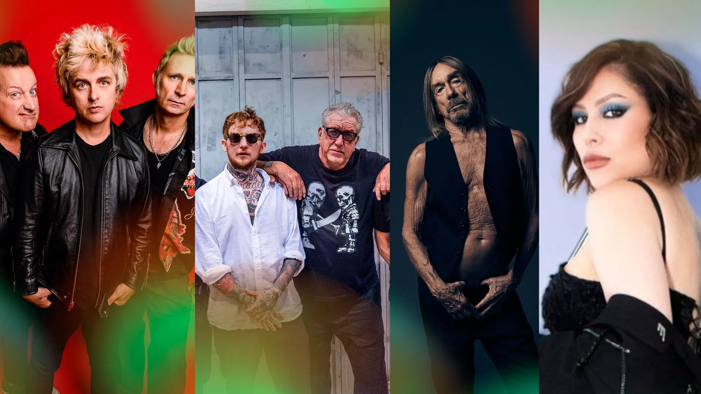
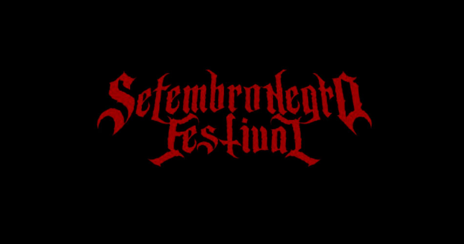
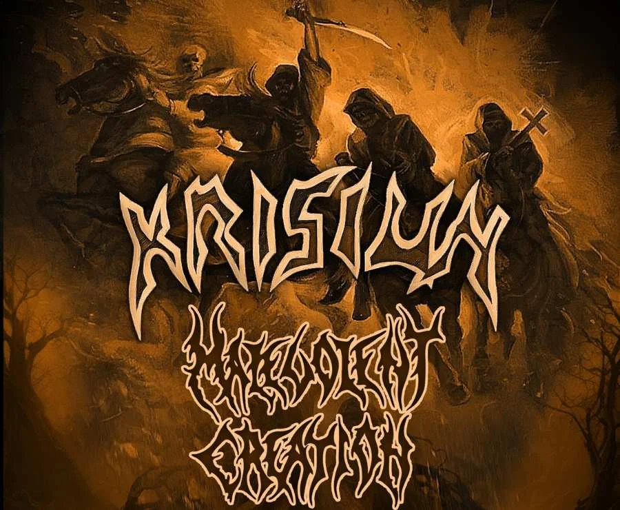
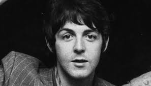
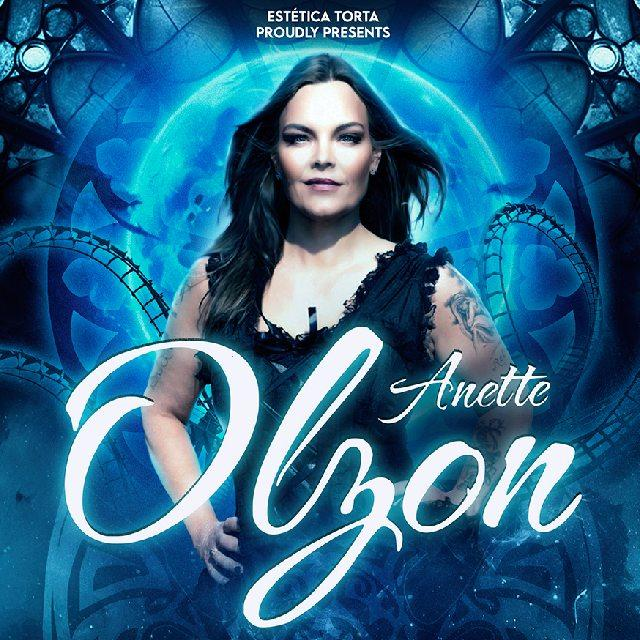

O festival The Town 2025, realizado no Autódromo de Interlagos em São Paulo, reuniu grandes nomes do rock mundial e nacional, incluindo Green Day, Iggy Pop, Bruce Dickinson e Pitty. O segundo dia do evento foi marcado por apresentações memoráveis, com público vibrando e cantando junto com os clássicos das bandas. A energia dos shows foi elogiada pela crítica, que destacou a interação dos artistas com o público e a qualidade sonora do evento.

O Setembro Negro Festival retornou em 2025 ainda mais pesado e impactante. O evento trouxe grandes nomes do metal, como Candlemass, Overkill, Incantation e Varathron, consolidando-se como um dos principais festivais de metal do país. Durante três dias, os fãs puderam conferir performances intensas e técnicas, celebrando o gênero com qualidade sonora impecável e um público engajado, mostrando a força do metal no Brasil.

As bandas Krisiun, do Brasil, e Malevolent Creation, dos Estados Unidos, iniciaram uma turnê conjunta pelo país em 2025, oferecendo aos fãs do death metal performances intensas e técnicas. A turnê passou por várias cidades, incluindo São Paulo, Limeira e Belo Horizonte, e foi promovida pelas produtoras Xaninho Discos e Caveira Velha Produções. O público teve a oportunidade de ver duas das maiores forças do death metal mundial dividindo o mesmo palco, com um show cheio de energia e clássicos do gênero.

Nos dias 13 e 14 de setembro de 2025, o Parque Capivari, em Campos do Jordão, recebeu a primeira edição do Campos Rock Fest, um festival totalmente gratuito voltado para o rock nacional e regional. O evento contou com bandas locais e regionais, proporcionando uma oportunidade para novos talentos se apresentarem. Além da música, o festival promoveu interação com o público, atividades culturais e experiências para todos os gostos, consolidando-se como um dos principais eventos de rock do interior paulista.

A ex-vocalista do Nightwish, Anette Olzon, retornou ao Brasil para uma série de shows em 2025, apresentando os maiores clássicos da banda finlandesa. Os fãs tiveram a oportunidade de reviver grandes momentos do symphonic metal, com performances de álbuns como "Dark Passion Play" e "Imaginaerum". A turnê passou por cidades como Rio de Janeiro, Recife, Brasília, Curitiba, Porto Alegre e São Paulo, consolidando a artista como uma referência para os amantes do gênero.